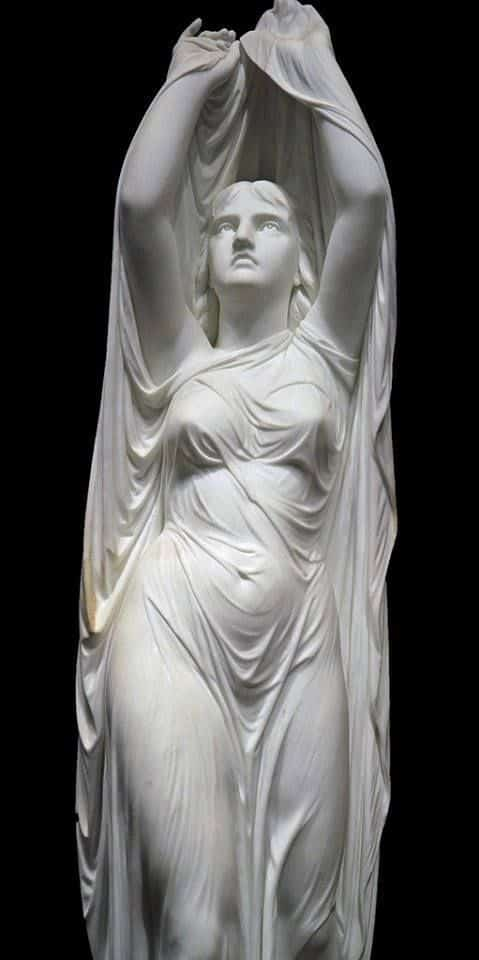
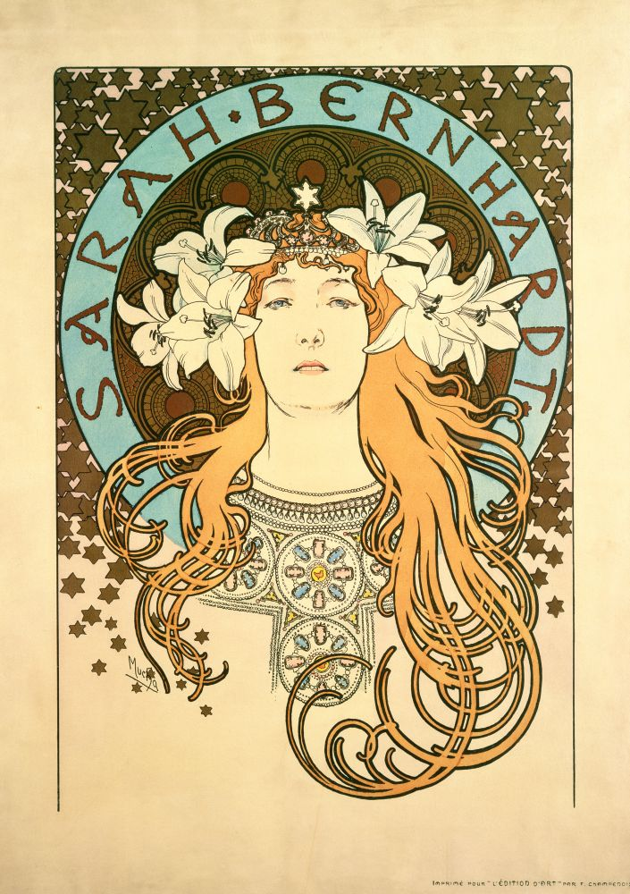
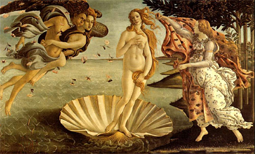

Retonar
Sobre
Selecione sue estilo favorito:
**A seleção são atuliazada a cada 7 dias

Escultura
Ondina emergindo das águas
Chauncey Bradley Ives

Art nouveau
Sarah Bernhardt (1896)
Alfons Maria Mucha.

Barroco
O Nascimento de Vênus
Sandro Botticelli
teste